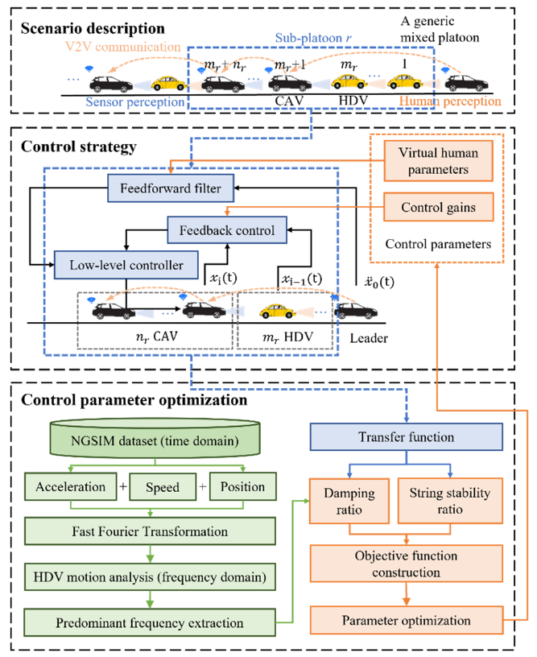
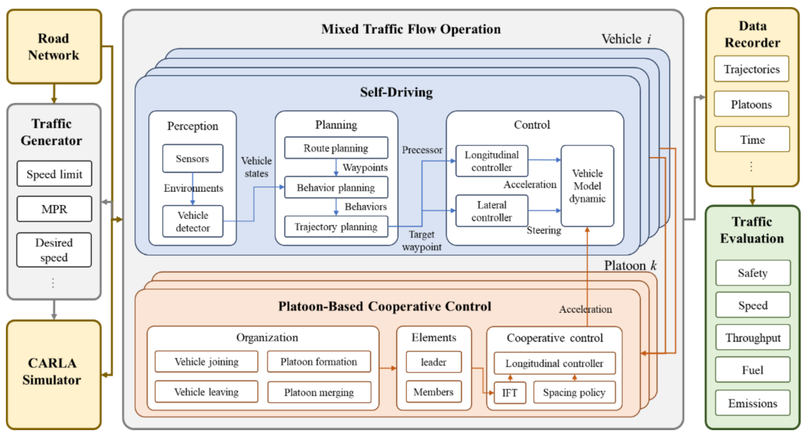
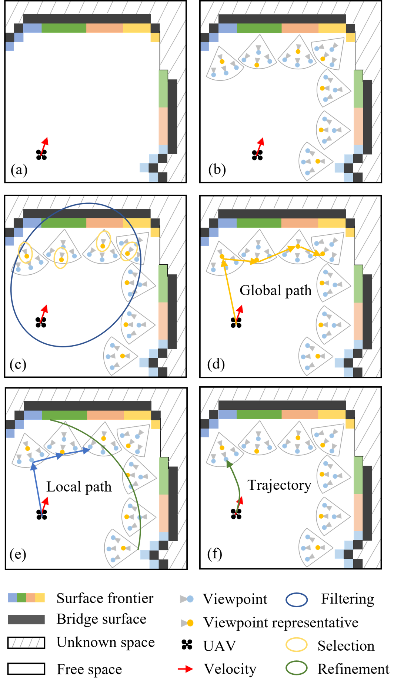
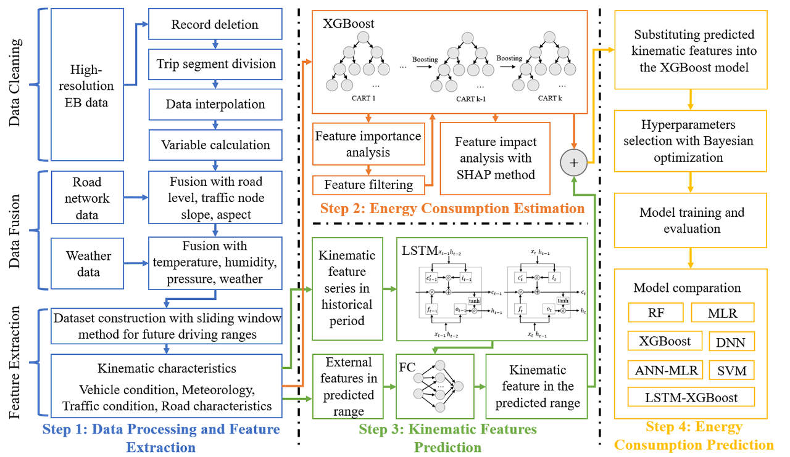
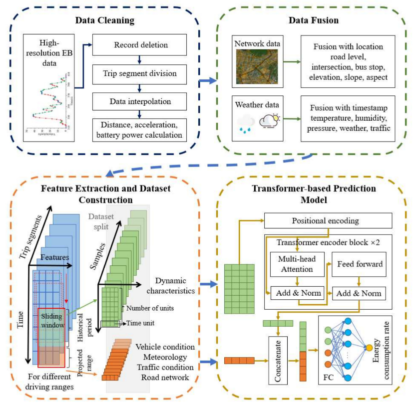
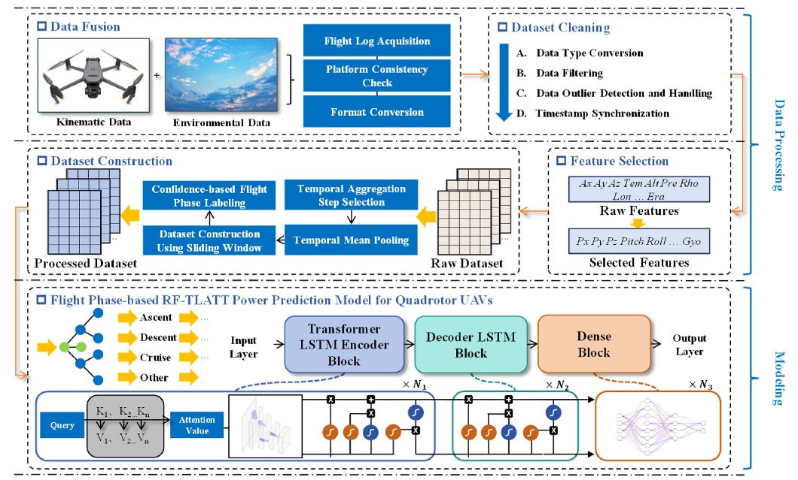
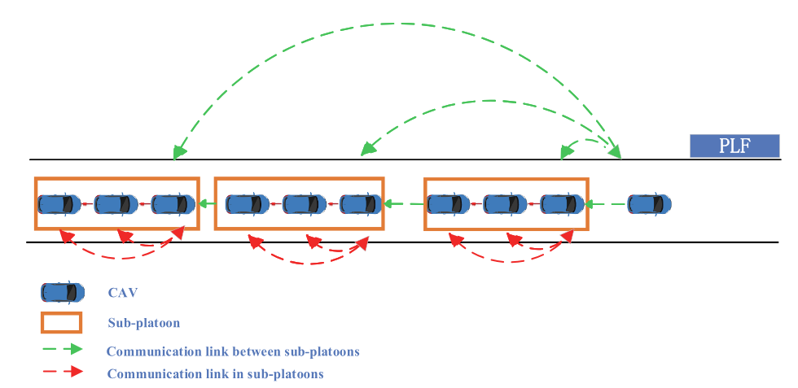
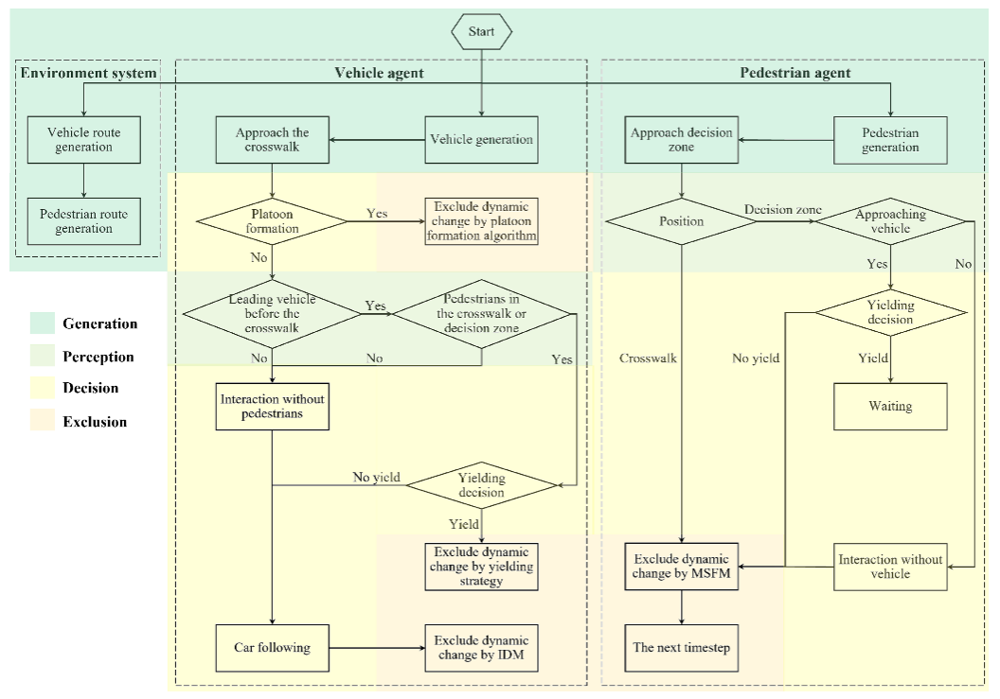

Sep 2024 - Present
M.S. in Traffic and Transportation Engineering
Southeast University, Nanjing, China
Hello! I am Zhuozhi Xiong, currently a master's student in the School of Transportation at Southeast University, supervised by Professor Hao Wang. Previously, I received my bachelor's degree from the School of Transportation at Southeast University, where I worked with Professor Hao Wang and Changyin Dong.
My research lies at the intersection of robotics, artificial intelligence, and intelligent transportation systems.
Southeast University, Nanjing, China
Southeast University, Nanjing, China







